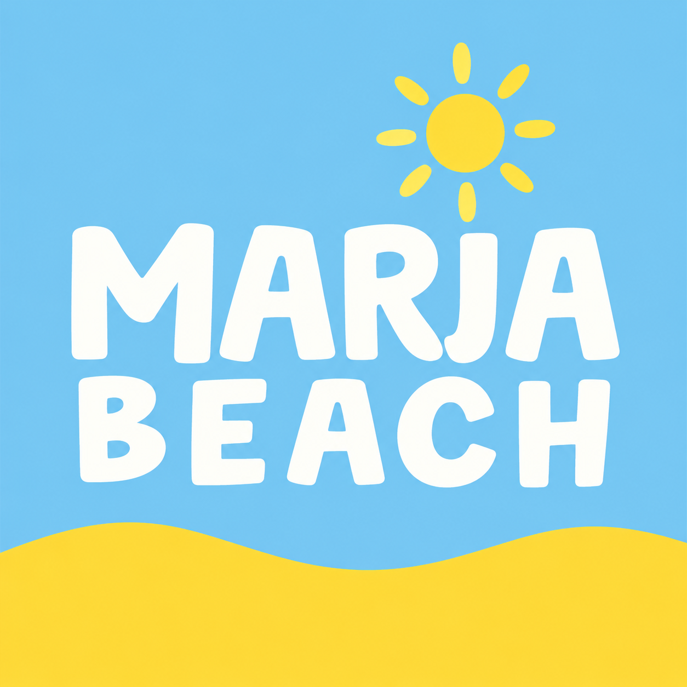

RÍO
FOTO
DEL RÍO
DEL RÍO

MARÍARincón Santa María · Ituzaingó · Corrientes
Playa, cantina, música y encuentros que se quedan un rato más.
SERVICIOS DE PLAYA
Y CANTINA
A orillas del Paraná
Entre arena, sombra y río, María Beach es una pausa que se transforma con el día. Vení a pasarla bien, sin apuro.
DÍA
Río, playa y cantina. El plan se arma solo.
SUNSET
Drinks, amigos y esa hora que no pide explicación.
NOCHE
Peñas, DJs y encuentros que se viven frente al río.
FOOD & DRINKS
Una cantina de playa para hacer una pausa, brindar y seguir cerca del río.
Ver novedadesLa carta se publica en Instagram.
EL RÍO TAMBIÉN SUENA
MARÍA BEACH
RINCÓN SANTA MARÍA
Peñas, sets al atardecer, DJs y propuestas especiales: cada encuentro encuentra su propia forma frente al río.
Una selección cambia con cada temporada.
RÍO
ENCUENTROS
LA MADERA
DESPUÉS
ÚLTIMA LUZ
Espacios preparados para incorporar fotografías originales de María Beach.
A ORILLAS DEL PARANÁ
Ituzaingó, Corrientes, Argentina.
Cómo llegarRESERVAS · EVENTOS · CONSULTAS